第 8 章
图像计算迈向图像创作
本章共 5 个小节 · add、mask、addWeighted、bitwise、XOR 加密解密
图像在 OpenCV 中是像素矩阵，因此可以进行数值运算。本章从 cv2.add() 与 NumPy 加法差异开始，
再讲遮罩 mask、图像加权和、位运算，以及使用 XOR 完成图像加密与解密。
8-1
图像加法运算
OpenCV 的 cv2.add() 执行的是饱和加法：如果结果超过 255，输出会固定为 255。
NumPy 的 + 对 uint8 则会按 256 取余，因此明亮区域可能反而变暗。
dst = cv2.add(src1, src2, dst=None, mask=None, dtype=None)
程序实例 ch8_1.py：使用 add() 执行像素值相加
# ch8_1.py
import cv2
import numpy as np
src1 = np.random.randint(0, 256, size=(3, 3), dtype=np.uint8)
src2 = np.random.randint(0, 256, size=(3, 3), dtype=np.uint8)
dst = cv2.add(src1, src2)
print(f"src1 =\n{src1}")
print(f"src2 =\n{src2}")
print(f"dst =\n{dst}")
程序实例 ch8_2.py：灰度图像使用 add() 相加
# ch8_2.py
import cv2
import numpy as np
img = cv2.imread("jk.jpg", cv2.IMREAD_GRAYSCALE)
res = cv2.add(img, img)
cv2.imshow("MyPicture1", img)
cv2.imshow("MyPicture2", res)
cv2.waitKey(0)
cv2.destroyAllWindows()
程序实例 ch8_3.py：彩色图像使用 add() 相加
# ch8_3.py
import cv2
import numpy as np
img = cv2.imread("jk.jpg")
res = cv2.add(img, img)
cv2.imshow("MyPicture1", img)
cv2.imshow("MyPicture2", res)
cv2.waitKey(0)
cv2.destroyAllWindows()
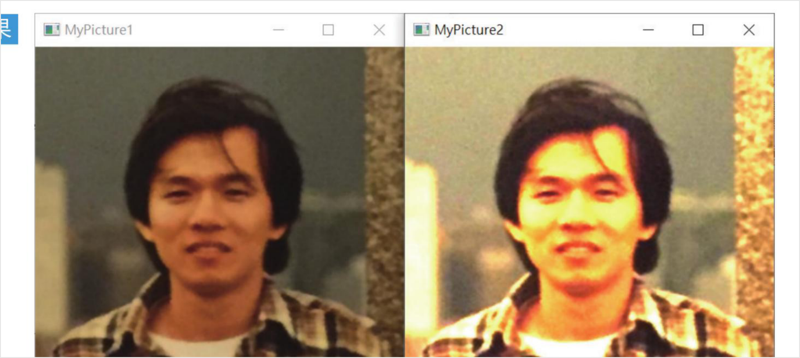
彩色图像与自身相加后的变亮结果，参考原书第 8-4 页。
程序实例 ch8_3_1.py：建立同尺寸数值矩阵调整亮度
# ch8_3_1.py
import cv2
import numpy as np
value = 20
img = cv2.imread("jk.jpg")
coff = np.ones(img.shape, dtype=np.uint8) * value
res = cv2.add(img, coff)
cv2.imshow("MyPicture1", img)
cv2.imshow("MyPicture2", res)
cv2.waitKey(0)
cv2.destroyAllWindows()
8-1-2 使用数学加法 + 符号
使用 + 时，如果 a + b <= 255，结果就是 a + b；
如果超过 255，会相当于取 256 的余数。例如 251 + 98 = 349，转回 uint8 后得到 93。
程序实例 ch8_4.py：使用 + 重新设计 ch8_1.py
# ch8_4.py
import cv2
import numpy as np
src1 = np.random.randint(0, 256, size=(3, 3), dtype=np.uint8)
src2 = np.random.randint(0, 256, size=(3, 3), dtype=np.uint8)
dst = src1 + src2
print(f"src1 =\n{src1}")
print(f"src2 =\n{src2}")
print(f"dst =\n{dst}")
程序实例 ch8_5.py：灰度图像比较 add() 与 +
# ch8_5.py
import cv2
import numpy as np
img = cv2.imread("jk.jpg", cv2.IMREAD_GRAYSCALE)
res1 = cv2.add(img, img)
res2 = img + img
cv2.imshow("MyPicture1", img)
cv2.imshow("MyPicture2", res1)
cv2.imshow("MyPicture3", res2)
cv2.waitKey(0)
cv2.destroyAllWindows()
程序实例 ch8_6.py：彩色图像比较 add() 与 +
# ch8_6.py
import cv2
import numpy as np
img = cv2.imread("jk.jpg")
res1 = cv2.add(img, img)
res2 = img + img
cv2.imshow("MyPicture1", img)
cv2.imshow("MyPicture2", res1)
cv2.imshow("MyPicture3", res2)
cv2.waitKey(0)
cv2.destroyAllWindows()
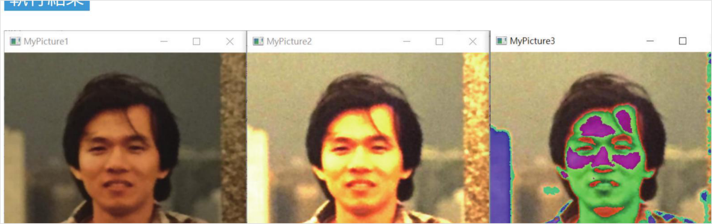
cv2.add() 与 + 的差异，参考原书第 8-7 页。
程序实例 ch8_7.py：加总 B、G、R 原色
# ch8_7.py
import cv2
import numpy as np
b = np.zeros((200, 250, 3), np.uint8)
g = np.zeros((200, 250, 3), np.uint8)
r = np.zeros((200, 250, 3), np.uint8)
b[:, :, 0] = 255
g[:, :, 1] = 255
r[:, :, 2] = 255
cv2.imshow("B channel", b)
cv2.imshow("G channel", g)
cv2.imshow("R channel", r)
img1 = cv2.add(b, g)
cv2.imshow("B + G", img1)
img2 = cv2.add(g, r)
cv2.imshow("G + R", img2)
img3 = cv2.add(img1, r)
cv2.imshow("B + G + R", img3)
cv2.waitKey(0)
cv2.destroyAllWindows()
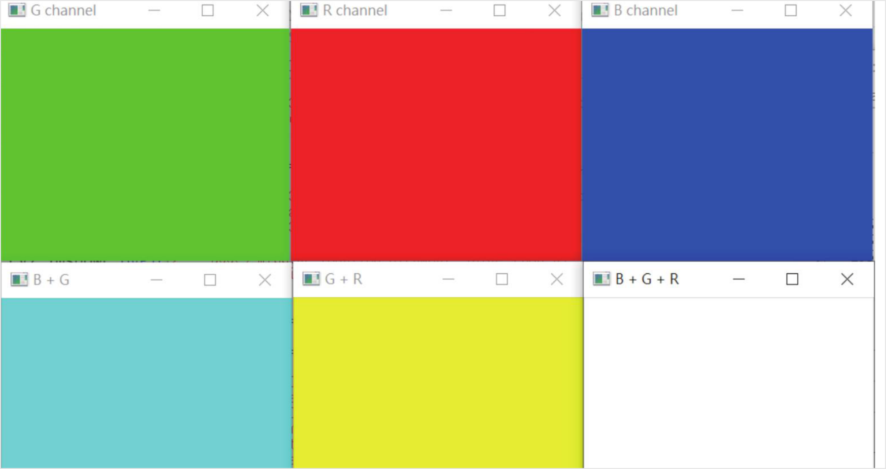
B、G、R 原色相加结果，参考原书第 8-8 页。
8-2
遮罩 mask
mask 是遮罩。遮罩值为 0 的位置不会参与处理，值为 255 的白色区域会参与处理。
它常用于限定 ROI 感兴趣区域。
程序实例 ch8_8.py：建立 mask 阵列并观察 add() 结果
# ch8_8.py
import cv2
import numpy as np
img1 = np.ones((4, 5), dtype=np.uint8) * 8
img2 = np.ones((4, 5), dtype=np.uint8) * 9
mask = np.zeros((4, 5), dtype=np.uint8)
mask[1:3, 1:4] = 255
dst = np.random.randint(0, 256, (4, 5), dtype=np.uint8)
print("img1 =\n", img1)
print("img2 =\n", img2)
print("mask =\n", mask)
print("最初值 dst =\n", dst)
dst = cv2.add(img1, img2, mask=mask)
print("结果值 dst =\n", dst)
程序实例 ch8_8_1.py：比较不含 mask 与含 mask 的图像加法
# ch8_8_1.py
import cv2
import numpy as np
img1 = np.zeros((200, 300, 3), np.uint8)
img1[:, :, 1] = 255
cv2.imshow("img1", img1)
img2 = np.zeros((200, 300, 3), np.uint8)
img2[:, :, 2] = 255
cv2.imshow("img2", img2)
m = np.zeros((200, 300, 1), np.uint8)
m[50:150, 100:200, :] = 255
cv2.imshow("mask", m)
img3 = cv2.add(img1, img2)
cv2.imshow("img1 + img2", img3)
img4 = cv2.add(img1, img2, mask=m)
cv2.imshow("img1 + img2 + mask", img4)
cv2.waitKey(0)
cv2.destroyAllWindows()
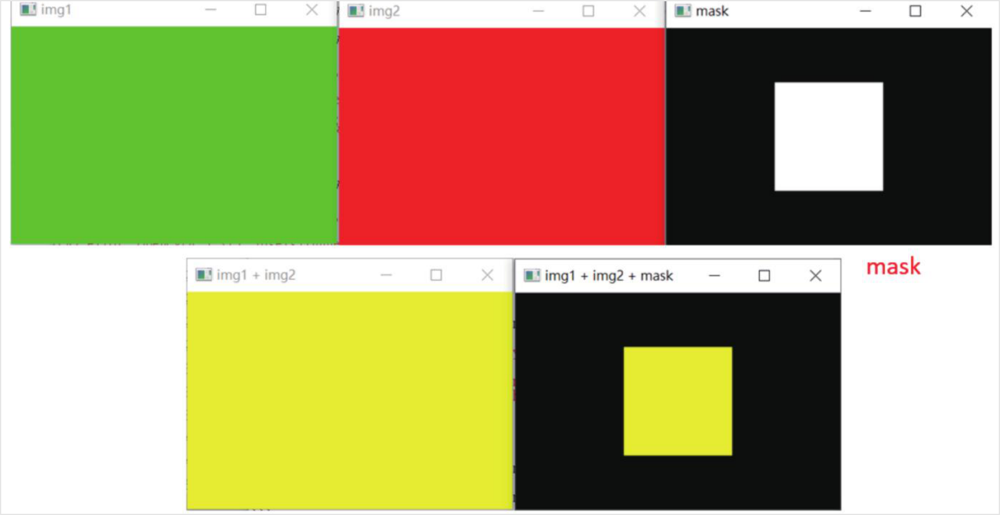
不含 mask 与含 mask 的相加结果，参考原书第 8-10 页。
8-3
重复曝光技术
重复曝光可理解为两幅图像的加权融合。OpenCV 使用 cv2.addWeighted() 计算加权和。
dst = cv2.addWeighted(src1, alpha, src2, beta, gamma)
程序实例 ch8_9.py：使用简单矩阵理解加权和
# ch8_9.py
import cv2
import numpy as np
src1 = np.ones((2, 3), dtype=np.uint8) * 14
src2 = np.ones((2, 3), dtype=np.uint8) * 50
alpha = 1
beta = 0.5
gamma = 0
print(f"src1 =\n{src1}")
print(f"src2 =\n{src2}")
dst = cv2.addWeighted(src1, alpha, src2, beta, gamma)
print(f"dst =\n{dst}")
程序实例 ch8_10.py：图像加权和应用
# ch8_10.py
import cv2
import numpy as np
src1 = cv2.imread("lake.jpg")
cv2.imshow("Lake", src1)
src2 = cv2.imread("geneva.jpg")
cv2.imshow("geneva.jpg", src2)
alpha = 1
beta = 0.2
gamma = 0
dst = cv2.addWeighted(src1, alpha, src2, beta, gamma)
cv2.imshow("Lake+geneva", dst)
cv2.waitKey(0)
cv2.destroyAllWindows()
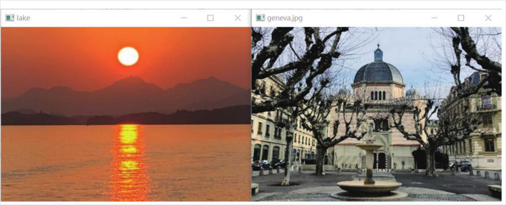
lake.jpg 与 geneva.jpg，参考原书第 8-12 页。
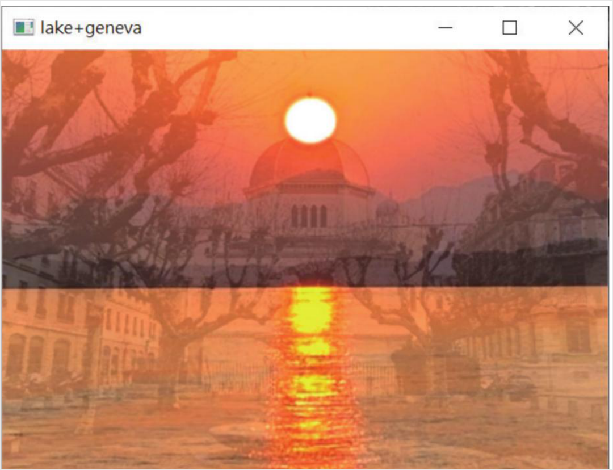
图像加权和的重复曝光效果，参考原书第 8-12 页。
8-4
图像的位运算
8-4-1 逻辑 and 运算
任一像素与白色 255 做 AND，结果保留原值；与黑色 0 做 AND，结果为 0。
因此 AND 常用于遮罩提取。
dst = cv2.bitwise_and(src1, src2, mask=None)
程序实例 ch8_11.py：简单数组理解 AND 规则
# ch8_11.py
import cv2
import numpy as np
src1 = np.random.randint(0, 255, (3, 5), dtype=np.uint8)
src2 = np.zeros((3, 5), dtype=np.uint8)
src2[0:2, 0:2] = 255
dst = cv2.bitwise_and(src1, src2)
print(f"src1 =\n{src1}")
print(f"src2 =\n{src2}")
print(f"dst =\n{dst}")
程序实例 ch8_12.py：灰度图像 AND 遮罩
# ch8_12.py
import cv2
import numpy as np
src1 = cv2.imread("jk.jpg", cv2.IMREAD_GRAYSCALE)
src2 = np.zeros(src1.shape, dtype=np.uint8)
src2[30:260, 70:260] = 255
dst = cv2.bitwise_and(src1, src2)
cv2.imshow("Hung", src1)
cv2.imshow("Mask", src2)
cv2.imshow("Result", dst)
cv2.waitKey(0)
cv2.destroyAllWindows()
程序实例 ch8_13.py：彩色图像 AND 遮罩
# ch8_13.py
import cv2
import numpy as np
src1 = cv2.imread("jk.jpg")
src2 = np.zeros(src1.shape, dtype=np.uint8)
src2[30:260, 70:260, :] = 255
dst = cv2.bitwise_and(src1, src2)
cv2.imshow("Hung", src1)
cv2.imshow("Mask", src2)
cv2.imshow("Result", dst)
cv2.waitKey(0)
cv2.destroyAllWindows()
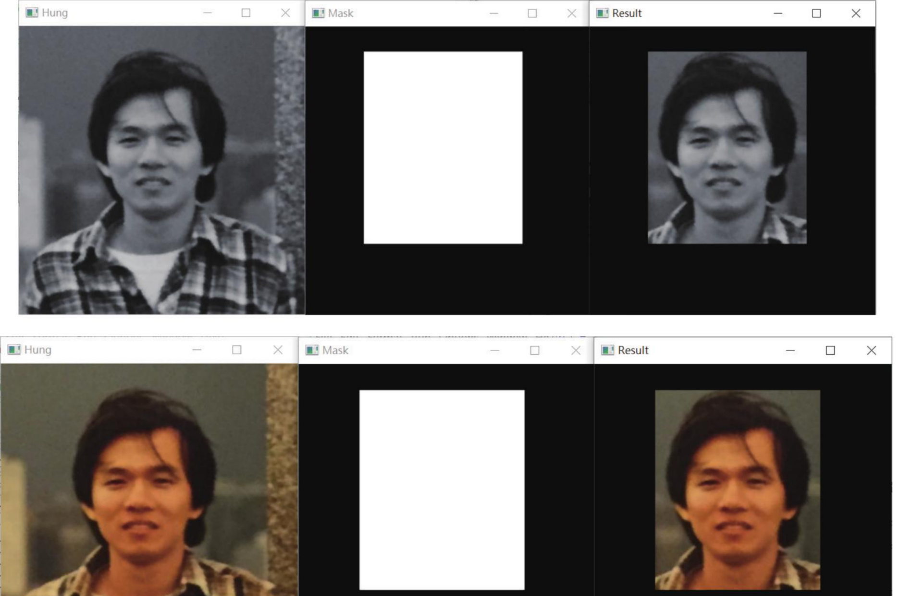
彩色图像使用 AND 保留遮罩白色区域，参考原书第 8-16 页。
8-4-2 逻辑 or 运算
OR 运算中，任一像素与白色 255 做 OR，结果为白色；与黑色 0 做 OR，结果保留原值。
dst = cv2.bitwise_or(src1, src2, mask=None)
程序实例 ch8_14.py：简单数组理解 OR 规则
# ch8_14.py
import cv2
import numpy as np
src1 = np.random.randint(0, 255, (3, 5), dtype=np.uint8)
src2 = np.zeros((3, 5), dtype=np.uint8)
src2[0:2, 0:2] = 255
dst = cv2.bitwise_or(src1, src2)
print(f"src1 =\n{src1}")
print(f"src2 =\n{src2}")
print(f"dst =\n{dst}")
程序实例 ch8_15.py：使用 OR 重写 ch8_13.py
# ch8_15.py
import cv2
import numpy as np
src1 = cv2.imread("jk.jpg")
src2 = np.zeros(src1.shape, dtype=np.uint8)
src2[30:260, 70:260, :] = 255
dst = cv2.bitwise_or(src1, src2)
cv2.imshow("Hung", src1)
cv2.imshow("Mask", src2)
cv2.imshow("Result", dst)
cv2.waitKey(0)
cv2.destroyAllWindows()
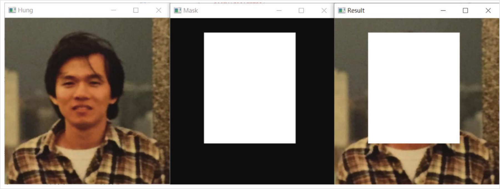
OR 运算让遮罩白色区域变白，参考原书第 8-18 页。
8-4-3 逻辑 not 运算
NOT 会把每个位反转，黑白会互换，彩色图像则产生类似底片的反相效果。
dst = cv2.bitwise_not(src, mask=None)
程序实例 ch8_16.py：对图像执行 NOT 运算
# ch8_16.py
import cv2
import numpy as np
src = cv2.imread("forest.jpg")
dst = cv2.bitwise_not(src)
cv2.imshow("Forest", src)
cv2.imshow("Not Forest", dst)
cv2.waitKey(0)
cv2.destroyAllWindows()
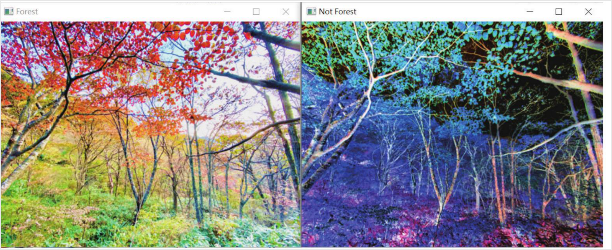
图像反相效果，参考原书第 8-19 页。
8-4-4 逻辑 xor 运算
XOR 与白色做运算会得到 NOT 效果，与黑色做运算会保留原值。因此 XOR 可用于局部反相，也可用于加密解密。
dst = cv2.bitwise_xor(src1, src2, mask=None)
程序实例 ch8_17.py：图像执行 XOR 运算
# ch8_17.py
import cv2
import numpy as np
src1 = cv2.imread("forest.jpg")
src2 = np.zeros(src1.shape, dtype=np.uint8)
src2[:, 120:360, :] = 255
dst = cv2.bitwise_xor(src1, src2)
cv2.imshow("Forest", src1)
cv2.imshow("Mask", src2)
cv2.imshow("Forest xor operation", dst)
cv2.waitKey(0)
cv2.destroyAllWindows()
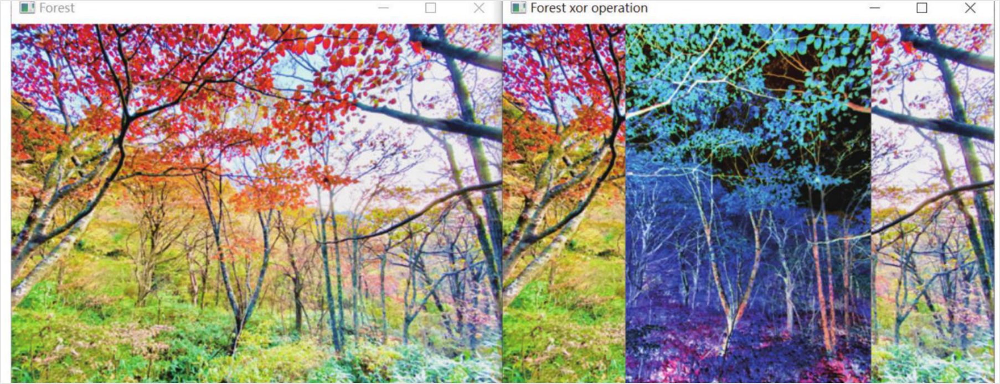
遮罩白色区块产生局部反相，参考原书第 8-21 页。
8-5
图像加密与解密
XOR 有可逆特性：原图与密钥 XOR 得到密文；密文再与同一密钥 XOR，可以还原原图。
程序实例 ch8_18.py：影像加密与解密
# ch8_18.py
import cv2
import numpy as np
src = cv2.imread("forest.jpg")
key = np.random.randint(0, 256, src.shape, np.uint8)
print(src.shape)
cv2.imshow("forest", src)
cv2.imshow("key", key)
img_encry = cv2.bitwise_xor(src, key)
img_decry = cv2.bitwise_xor(key, img_encry)
cv2.imshow("encryption", img_encry)
cv2.imshow("decryption", img_decry)
cv2.waitKey(0)
cv2.destroyAllWindows()
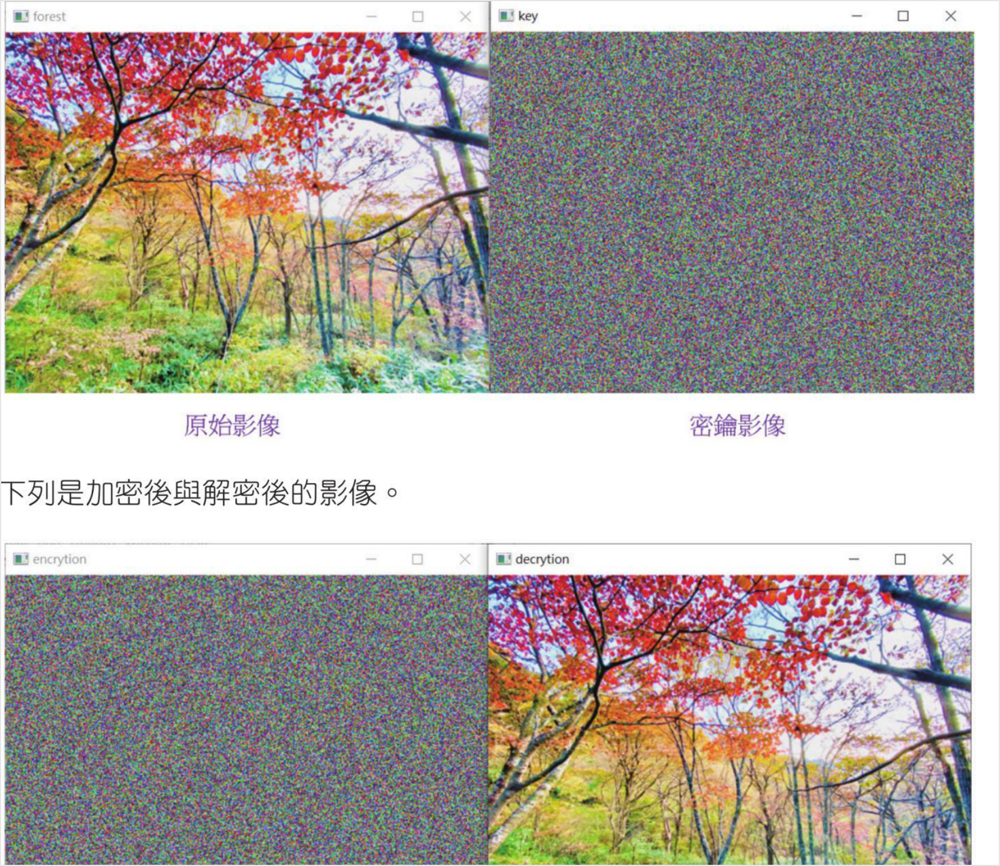
随机密钥、加密影像与解密影像，参考原书第 8-23 页。
1：使用风景图像 mazu.jpg 重新设计 ch8_6.py，比较 add() 与 + 的差异。
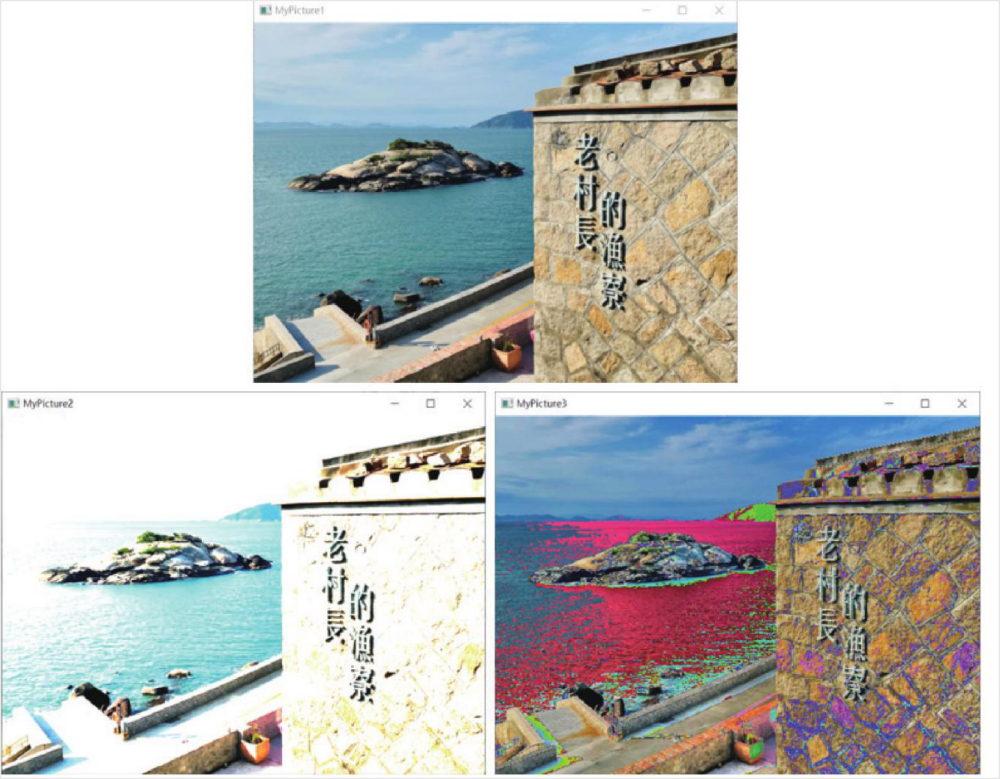
习题 1 参考效果，参考原书第 8-24 页。
2：参考 ch8_13.py，读取 geneva.jpg 并建立指定遮罩。
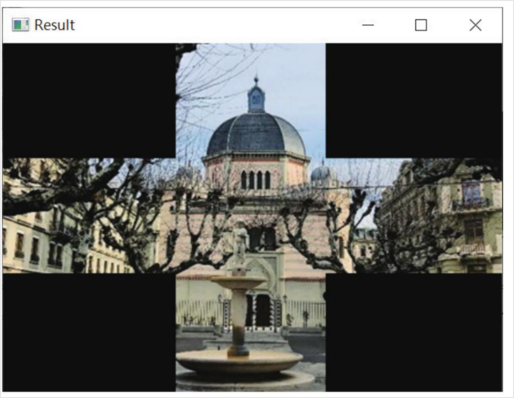
习题 2 参考效果，参考原书第 8-25 页。
3：参考 ch8_15.py，使用 OR 运算完成相同图像的遮罩变化。